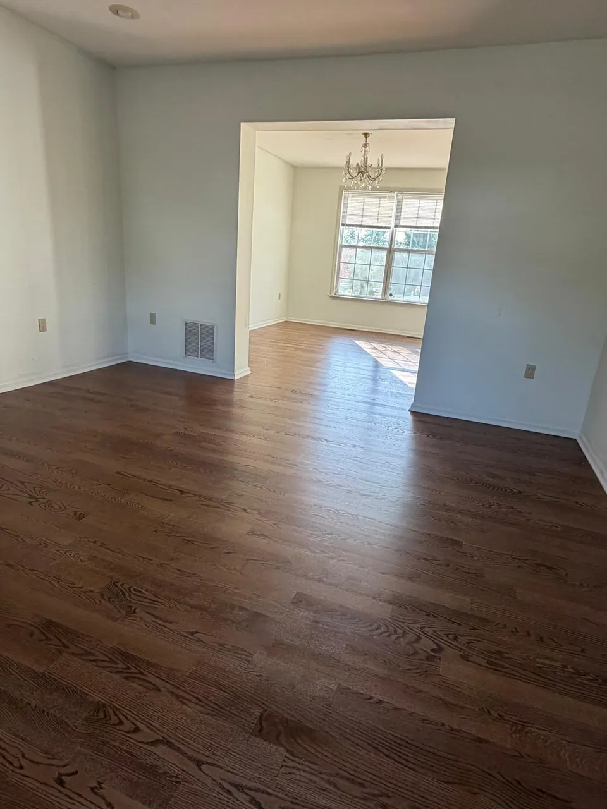

In this article
Quick answer
Request an estimate six to eight weeks before Thanksgiving, and aim to have sanding, staining and finishing done two to three weeks before guests arrive. Light foot traffic is often possible within about 24 hours, furniture usually waits several days, and area rugs often need 7 to 14 days or longer, depending on the finish.
Introduction
Thanksgiving and Christmas bring family, friends, and plenty of activity into your home. If your hardwood floors look scratched, dull, or worn, fall may seem like the perfect time to refresh them before guests arrive.
However, refinishing hardwood floors involves more than sanding and applying a new finish. You also need time for drying, curing, ventilation, and moving furniture back safely.
For homeowners in Westfield, Summit, Short Hills, Millburn, and surrounding New Jersey communities, understanding the schedule is essential to avoid last-minute stress.
The best time of year to refinish hardwood floors depends on your home's conditions, the finish you choose, and your contractor's availability. If you're planning to host Thanksgiving, booking in October can provide a valuable buffer.
Costa Flooring helps homeowners plan hardwood floor refinishing projects with free in-home estimates, more than 10 years of flooring experience, and professional workmanship.
Here's how to work backward from your holiday gathering and determine whether your floors can be ready in time.
When is the best time to refinish hardwood floors?
Fall is a popular season for refinishing because homeowners want their living rooms, dining rooms, and hallways looking their best before holiday gatherings.
However, October and early November can also be busy scheduling periods. Waiting too long may leave insufficient time for the project and the finish to cure.
Temperature, humidity, and ventilation also affect drying conditions. Your contractor should consider the specific finish manufacturer's instructions and your home's indoor environment.
For homeowners planning to refinish wood floors before holidays NJ, the smartest approach is to schedule early and leave extra time for unexpected repairs or delays.
If Thanksgiving is too close, Christmas may offer a more realistic deadline, depending on contractor availability and the size of the project.
The holiday refinishing countdown
Working backward from your hosting date helps you determine when to book and how much flexibility you need.
6 to 8 weeks out
Request a free in-home estimate
Assess the wood, flag repairs, talk stain colors and get the expected schedule.
4 to 6 weeks out
Confirm, choose the finish, plan the move-out
Arrange furniture removal and a place for kids and pets away from the work.
2 to 3 weeks out
Sanding, staining and finishing done
Leaves time for drying and curing before anyone sets a table.
1 to 2 weeks out
Protect the cure
The floor may feel dry, but heavy furniture and rugs may still need to wait.
Holiday
Host on finished floors
No rushed finish, no fresh coating under the dining chairs.
Six to eight weeks before Thanksgiving
Request a free in-home estimate. Your contractor can assess the hardwood, identify necessary repairs, discuss stain colors, and explain the expected schedule.
Booking early also gives you more flexibility when choosing your project dates.
Four to six weeks before Thanksgiving
Confirm your appointment, select your finish, and plan furniture removal. Make arrangements for children and pets to stay away from the work area.
Discuss ventilation, the number of coats, and when the rooms can be used again.
Two to three weeks before Thanksgiving
Ideally, the sanding, staining, and finishing work should be completed with enough time remaining for drying and curing.
The exact schedule depends on the floor's condition, the size of the area, and the products used.
One to two weeks before Thanksgiving
Protect the curing period. Even if the floor feels dry, heavy furniture and area rugs may still need to wait.
If your available appointment leaves only a few days before guests arrive, consider postponing the project rather than rushing the finish.
For homeowners in Summit and Short Hills, a realistic schedule is far more valuable than a promise to finish just before the holiday.
How long does polyurethane take to cure?
One of the most important questions to ask before refinishing hardwood is how long does polyurethane take to cure?
The answer depends on the product, temperature, humidity, ventilation, and application conditions.
- Last coatFinish applied
- ~24 hoursLight foot traffic, in socks*
- Several daysFurniture back, carefully*
- 7 to 14 daysArea rugs back down*
Drying versus curing
Drying means the finish has reached a stage where its surface is no longer wet. Curing is the longer process through which the finish develops its intended hardness and protective properties.
A floor may feel dry but remain vulnerable to scratches, pressure, and damage.
When can you walk on refinished floors?
Some finishes allow light foot traffic within approximately 24 hours, while others require different waiting periods. Always follow the instructions for the specific product used.
Light foot traffic does not mean the floor is ready for normal household activity.
When can furniture go back?
Furniture often needs to wait several days or longer, depending on the finish. Heavy furniture can leave marks or damage a coating that has not sufficiently hardened.
Ask your contractor for a clear furniture-return timeline before scheduling your project.
When can you put rugs down?
Area rugs often need to remain off freshly refinished floors for approximately 7 to 14 days, sometimes longer depending on the product.
Rugs can restrict airflow and potentially affect a finish that has not fully cured. If your holiday dining setup depends on an area rug, plan around this restriction before booking.

Water-based vs. oil-based finishes
Your choice of polyurethane affects the appearance of your floors, drying schedule, and odor during the project.
Water-based polyurethane
Water-based finishes generally dry faster between coats and typically have lower odor than traditional oil-based products. They may be a practical option when you're working toward a holiday deadline.
However, faster drying does not mean immediate curing. Furniture and rug restrictions still apply.
Oil-based polyurethane
Oil-based polyurethane often gives wood a warmer, amber appearance. However, traditional products generally take longer to dry and may produce stronger odors.
If you're planning a Thanksgiving gathering, allow enough time for drying, ventilation, and curing before guests arrive.
Which finish should you choose?
Neither option is automatically best for every home. Consider your preferred appearance, schedule, indoor conditions, and the manufacturer's requirements.
A professional flooring contractor can explain the trade-offs and help you choose a suitable finish without compromising the project. Worried about the mess in a busy season? See how dust containment works during refinishing.
Conclusion
Refinishing hardwood floors before Thanksgiving or Christmas can transform your home's appearance, but timing is everything. Booking early, choosing the right finish, and allowing adequate curing time help prevent unnecessary stress before guests arrive.
For homeowners planning wood floor refinishing Westfield NJ or throughout Summit, Short Hills, Millburn, Chatham, Madison, and nearby communities, Costa Flooring can help you evaluate your floors and plan the next steps.
With more than 10 years of flooring experience, licensed and insured service, and a commitment to quality workmanship, Costa Flooring offers professional guidance from the initial estimate through project completion.
Don't wait until your holiday calendar is full. Request your free in-home estimate and find out whether your floors can be refinished in time for your celebration.
Call (862) 452-2181 to get started!